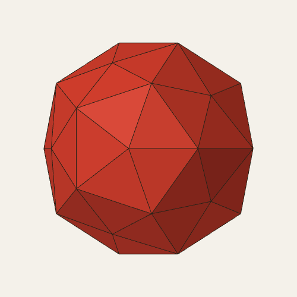

The solid in the last gap of the golden cycle: a dodecahedron–icosahedron hull whose icosahedron edge is 9/φ⁴ times its dodecahedron edge

Take the icosahedron with corners (0, ±1, ±φ) and their cyclic shifts (edge 2), and the dodecahedron with corners (±1, ±1, ±1) and the cyclic shifts of (0, ±φ, ±1/φ), placed so that its corners lie over the icosahedron's face centres (edge 2/φ). Scale the dodecahedron by k and take the convex hull. Its icosahedron edge is then φ/k times its dodecahedron edge. The DICTO Metaxyhexecontahedron is the member with k = φ⁵/9 = 11/18 + 5√5/18, so that the ratio is 9/φ⁴ (squared, 81/φ⁸).
| Property | Value (exact) |
|---|---|
| corners | 32: 12 five-fold (the icosahedron's), 20 three-fold (the dodecahedron's) |
| faces, edges | 60 congruent isosceles triangles, 90 edges; the combinatorics of the pentakis dodecahedron |
| squared edge lengths | 94/81 + 14√5/27 (60 edges, five-fold to three-fold) and 14/9 + 2√5/27 (30 edges, three-fold to three-fold) |
| squared corner radii | 5/2 + √5/2 (five-fold) and 41/18 + 55√5/54 (three-fold) |
| insphere | all 60 faces at squared distance 7249/4162 + 16209√5/20810 |
| midsphere | none: the two kinds of edge lie at squared distances 2 + 20√5/27 and 161/81 + 8√5/9 |
| volume | 410/27 + 550√5/81 ≈ 30.3684 (in these units) |
Table 1. The DICTO Metaxyhexecontahedron in closed form (scripts/hull_family_exact.py, every face plane and every corner tested exactly).
The Spheres of Dharma (DICTO DOI: 10.5281/zenodo.23310833) nest icosahedral shells in a cycle that repeats every φ³; Progenitors (DICTO DOI: 10.5281/zenodo.23413184) set the DICTO Ogdoecontahedron into it, and Vajrayana (DICTO DOI: 10.5281/zenodo.23429911) closed its loose steps. In the step from the rhombic triacontahedron RT to the next icosahedron I·φ³, the triacontahedron reaches only 0.812 of the way. DICTO judged that one more solid should fit there. Among the convex icosahedral solids none touches both neighbours (Vajrayana, Table 3, float); this member of the dodecahedron–icosahedron hull family does. In the cycle's own units it is the hull of the triacontahedron's 12 five-fold corners and the 20 face centres of I·φ³ (squared radii 45/8 − 9√5/8 and 47/24 + 7√5/8; the same solid as Table 1, checked exactly). Cut by cones from the centre over the faces of the inner solid, the step RT → M is 30 pieces of one kind and M → I·φ³ is 60 pieces of one kind (a triangular-bipyramid shape); M takes 0.356 of the step's volume. Its polar, with 12 regular pentagons and 20 hexagons whose sides alternate in the ratio (14 + 9√5)/11, closes the matching step of the polar-reversed cycle.
The hulls of a dodecahedron and an icosahedron in dual position form a one-parameter family with the pentakis dodecahedron's combinatorics, fully symmetric for edge ratios from (5 + 3√5)/10 to φ. Its named members are the Catalan pentakis dodecahedron at 3(7 + 5√5)/38 ≈ 1.435, the DICTO Palintriacontahedron at 3/√5 ≈ 1.342 (its own introduction accompanies this one), and the DICTO Metaxyhexecontahedron at 9/φ⁴ ≈ 1.313. We note without explanation that 9/φ⁴ is also the exact gain per round of the tightest progenitor cycle in Progenitors.
Known: the family (the pentakis dodecahedron as the hull of a dodecahedron and an icosahedron, and its fully symmetric range: Polytope Wiki; the Catalan member: MathWorld, McCooey). Not found, in the sources checked (listed in Vajrayana §5 and its study's SEARCH-LOG.md): this member as a named or distinguished solid, or the 9/φ⁴ ratio as distinguished. The name returns no results. Every "not found" is limited to those sources.
scripts/hull_family_exact.py and its output data-hull-family-exact.txt (this paper, exact). The cycle, the pieces and the dual: Vajrayana's record and the study at https://github.com/DICTOR-Master/kaleidohedra (branch research: studies/2026-10-16-progenitors: gap_member.py, gap_pieces_exact.py, metaxy_dual.py). See it in the app: Kaleidohedra, 3D+ → Vajrayana.